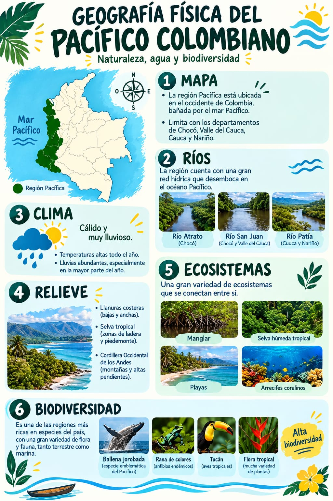
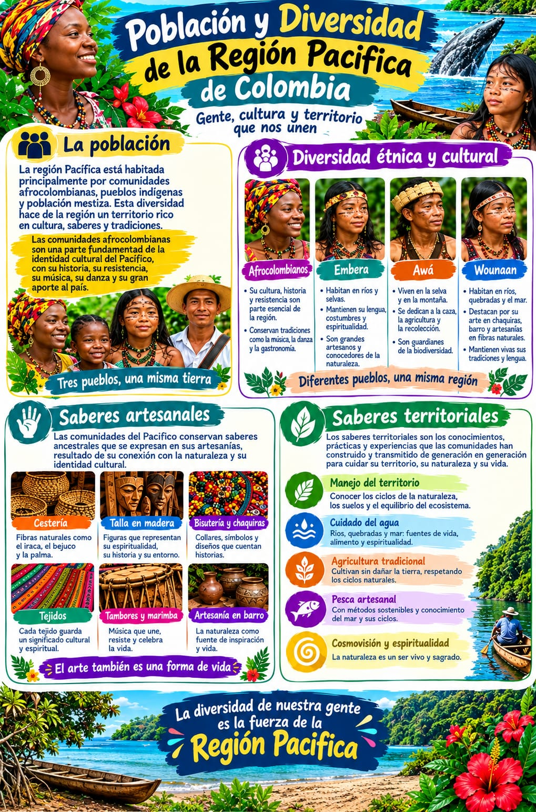

01 · AGUA
Ríos, esteros y movilidad
Los ríos Atrato, San Juan, Baudó, Mira y Patía forman parte de una red hídrica fundamental. En muchos territorios los ríos y esteros son rutas de movilidad, espacios de pesca y lugares de encuentro.
REGIÓN NATURAL · EXPERIENCIA DIGITAL
Selva, océano, ríos y memoria. Explora una región donde el paisaje, la economía y la cultura están profundamente conectados.
01 · UBICACIÓN
Para este proyecto se usa la agrupación regional del DANE: Cauca, Chocó, Nariño y Valle del Cauca. El litoral del Pacífico reúne costa, selva, ríos, manglares y territorios insulares.
02 · GEOGRAFÍA FÍSICA
La región combina llanuras costeras, serranías, ríos caudalosos, selva húmeda, manglares, playas y ambientes marino-costeros.
CAPAS DEL TERRITORIO
Su geografía se entiende mejor al relacionar agua, relieve, ecosistemas, comunidades y actividades económicas.
LECTURA PROFUNDA
La región puede estudiarse como un sistema: lo que ocurre en el agua, el bosque, la costa y las comunidades está conectado.
01 · AGUA
Los ríos Atrato, San Juan, Baudó, Mira y Patía forman parte de una red hídrica fundamental. En muchos territorios los ríos y esteros son rutas de movilidad, espacios de pesca y lugares de encuentro.
02 · COSTA
La costa cambia con las mareas y conecta manglares, estuarios, playas, litorales rocosos y ambientes coralinos. Esta variedad explica buena parte de la riqueza biológica del litoral.
03 · VIDA
La selva y el mar sostienen aves, tortugas, peces, corales y mamíferos marinos. La llegada estacional de yubartas es uno de los fenómenos naturales más conocidos de la costa.
04 · SOCIEDAD
La pesca, la agricultura, la cocina, la música, la navegación y la tradición oral expresan una relación histórica entre las comunidades y los ambientes donde viven.
03 · BIODIVERSIDAD
En el Pacífico conviven ecosistemas terrestres y marinos. Áreas como Gorgona reúnen selva húmeda, manglares, playas, litoral rocoso y arrecifes.
04 · GEOGRAFÍA HUMANA
Ríos, costa, pueblos, saberes y redes comunitarias hacen parte de la vida regional. La diversidad cultural incluye comunidades afrocolombianas, indígenas y campesinas.
PATRIMONIO CULTURAL
Las músicas de marimba y los cantos tradicionales del Pacífico Sur forman parte del patrimonio cultural inmaterial. La manifestación integra marimba de chonta, cununos, bombos, guasás, voces y prácticas comunitarias.
05 · GEOGRAFÍA ECONÓMICA
La economía combina agricultura, pesca, minería, comercio, servicios, transporte, turismo y actividad portuaria. DANE reportó para 2023 un PIB regional a precios corrientes de 211 billones de pesos.
06 · LUGARES
07 · PROBLEMÁTICAS Y DESAFÍOS
La región enfrenta desafíos ambientales y sociales que deben analizarse desde datos, territorio y diferentes perspectivas.
08 · PRODUCTOS DEL GRUPO
Los materiales que subiste ya forman parte de la experiencia: podcast, ambientes sonoros y la presentación del proyecto.
Escucha directamente el audio producido para acompañar la investigación.
Úsalo como ambiente mientras recorres las secciones de geografía y biodiversidad.
Un paisaje sonoro para acompañar la parte marítima y costera de la página.
Consulta las dos infografías incorporadas al repositorio directamente desde la web.


Reproduce el video directamente desde la página. La versión incluida está optimizada para web.
La presentación del grupo queda integrada como documento consultable sin salir de la web.
Los audios se reproducen solo cuando el visitante pulsa los controles. Así no se inicia sonido automáticamente.
09 · LABORATORIO INTERACTIVO
MISIÓN
Ordena el recorrido: nacimiento, cauce, comunidades y desembocadura.
10 · FUENTES
Consulta las fuentes oficiales y académicas usadas como base para la experiencia.
La presentación, el podcast y los ambientes sonoros corresponden a los archivos incorporados al repositorio. Las fotografías remotas son recursos visuales de apoyo; antes de la entrega final conviene conservar sus créditos y verificar las condiciones de uso.
PACÍFICO COLOMBIANO
Una región no cabe en una sola fotografía. Sigue explorando sus paisajes, comunidades, economía, cultura y desafíos.
Volver al inicio ↑